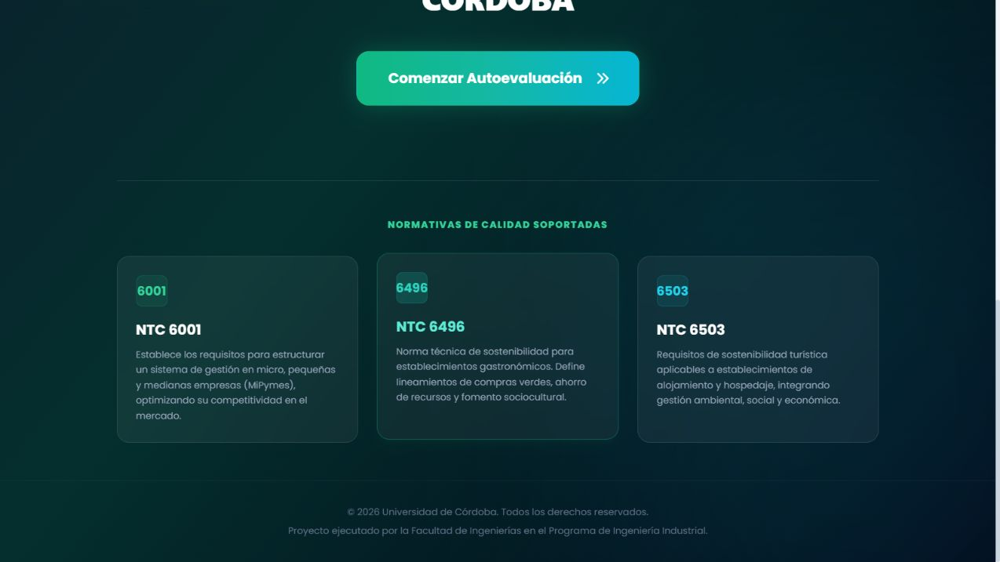
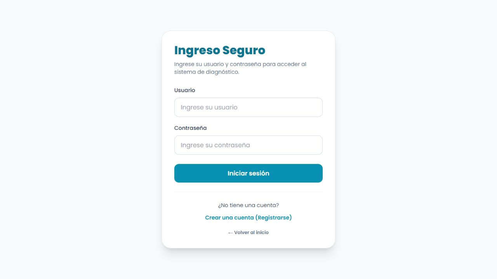
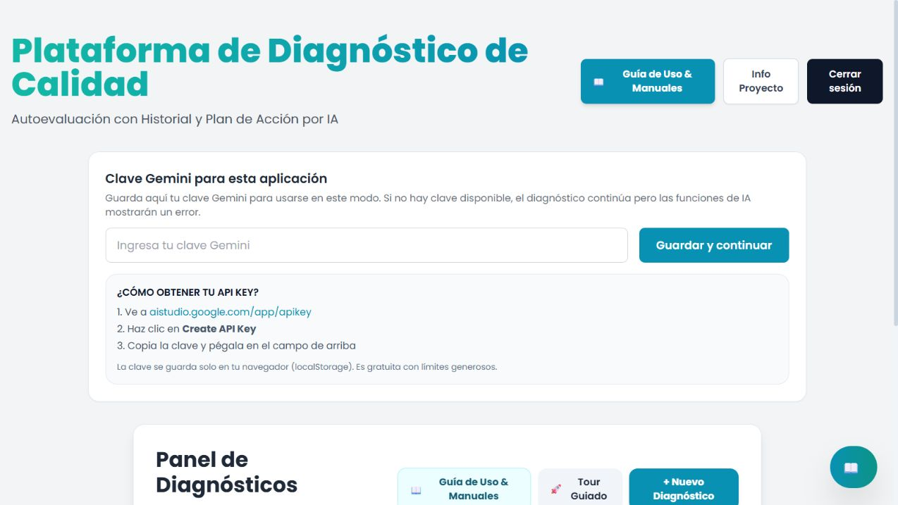
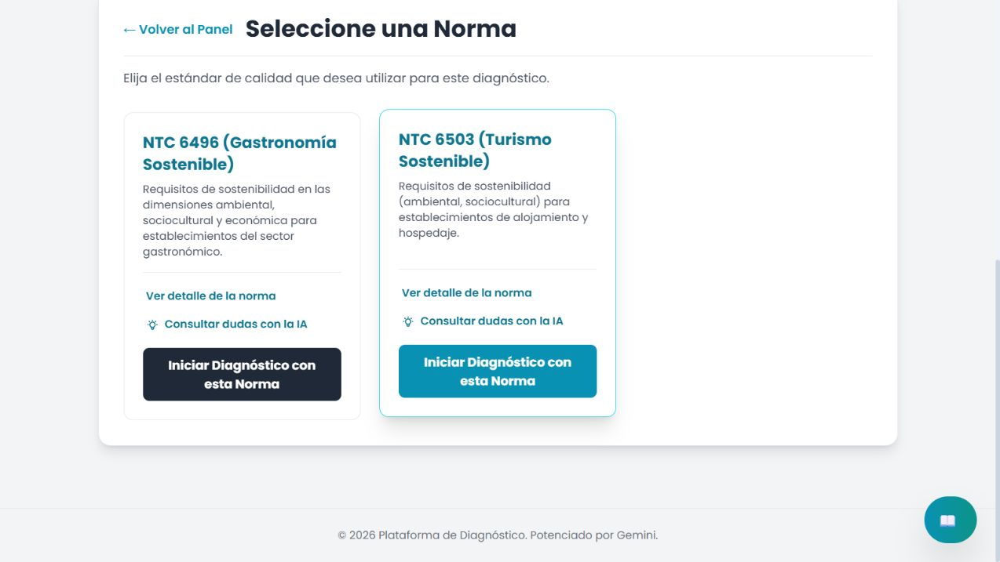
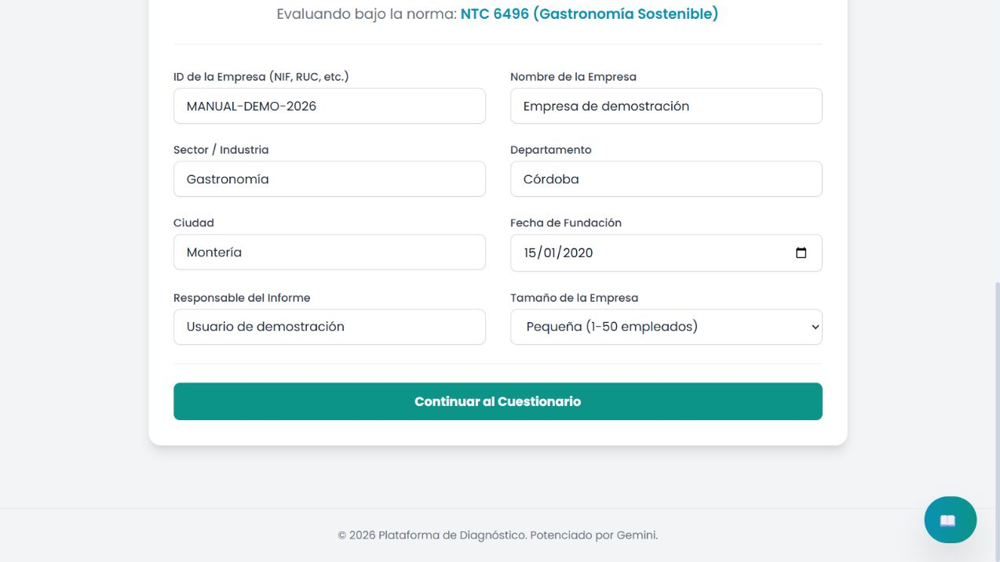
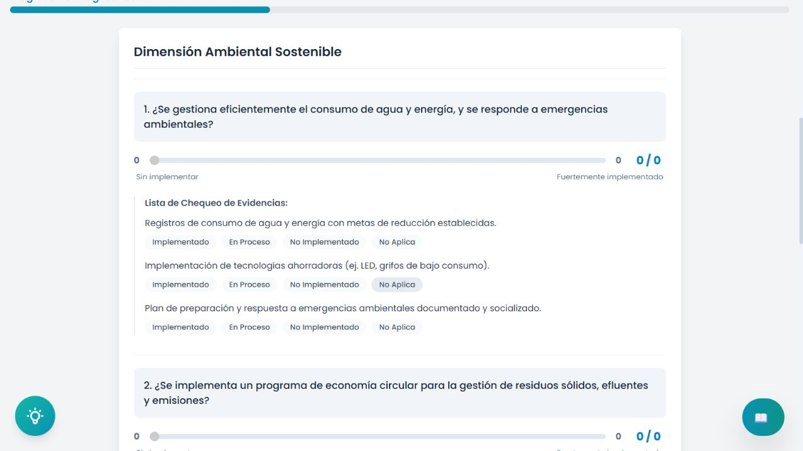
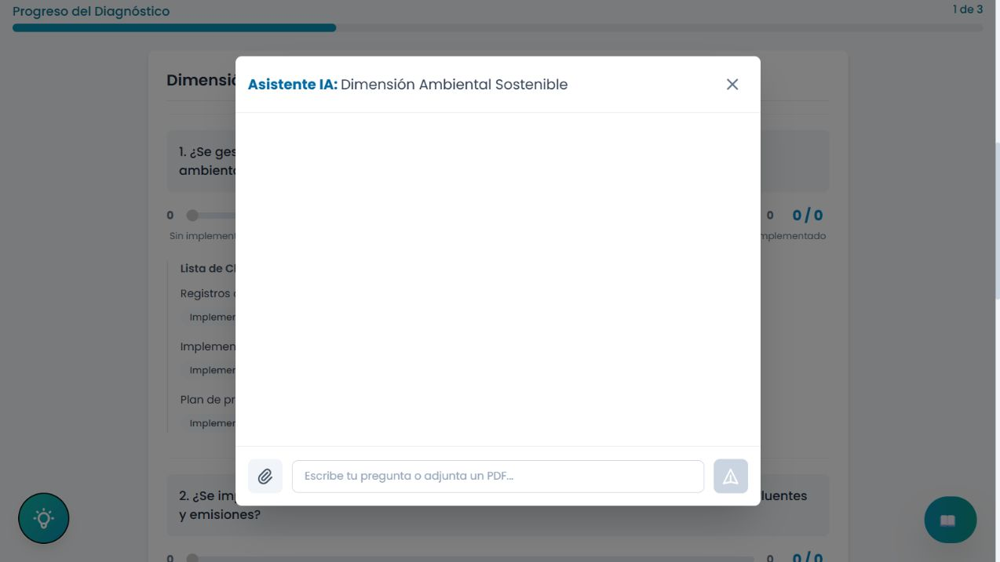
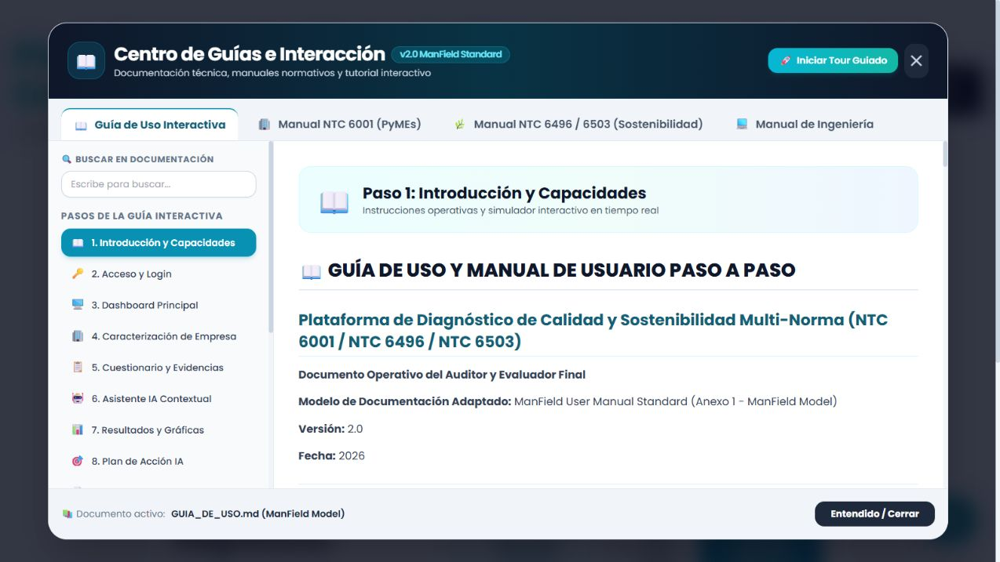

Antes de empezar
La plataforma permite evaluar organizaciones frente a las normas NTC 6001 (MiPymes), NTC 6496 (establecimientos gastronómicos) y NTC 6503 (alojamiento y hospedaje).
- Use un navegador actualizado y una pantalla de al menos 1280 × 720 px para una experiencia más cómoda.
- Tenga a mano la información de la empresa y las evidencias que soportan cada requisito.
- La conexión a internet es necesaria para las funciones de asistencia con IA.
1. Acceso y registro
Desde la pantalla de inicio puede consultar el propósito de la herramienta y las normas cubiertas. Seleccione Ingresar para iniciar sesión o Comenzar Autoevaluación para avanzar hacia el flujo de acceso.



Cómo ingresar
- Escriba su usuario y contraseña.
- Seleccione Iniciar sesión.
- Si aún no dispone de cuenta, use Crear una cuenta (Registrarse), complete los tres campos y confirme el registro.
Panel principal
Después de autenticarse aparece el panel de diagnósticos. Desde allí puede abrir la guía integrada, iniciar el tour, crear una evaluación o consultar diagnósticos previamente guardados.

2. Crear un nuevo diagnóstico
- En el panel principal, seleccione + Nuevo Diagnóstico.
- Registre el nombre de la empresa, identificación/NIT, departamento, ciudad, sector, responsable y tamaño de la organización.
- Elija la norma según la actividad evaluada: NTC 6001, NTC 6496 o NTC 6503.
- Revise los datos antes de continuar. Si el identificador ya está registrado, la plataforma puede recuperar información previa.
Selección normativa

Caracterización de la organización

3. Diligenciar el cuestionario
Los requisitos se agrupan por cláusulas. Para cada uno, indique el estado que represente la situación actual de la empresa:
| Estado | Cuándo usarlo |
|---|---|
| Cumple | El requisito está implementado y cuenta con soporte verificable. |
| Parcialmente | Hay avances, pero faltan actividades, formalización o registros. |
| No cumple | El requisito no se ha implementado o no existe evidencia disponible. |
| No aplica | El requisito no corresponde a las condiciones de la empresa. |
Evidencias y comentarios
- Marque las evidencias documentales disponibles: políticas, formatos, permisos, facturas, registros o reportes.
- Registre observaciones claras; estas enriquecen el informe y ayudan a definir acciones concretas.
- Use el icono de chat de la cláusula para pedir a la IA ejemplos de evidencias o sugerencias de implementación.

Asistente contextual
El botón flotante del asistente abre una conversación asociada a la cláusula que se está evaluando. Puede escribir una consulta o adjuntar un PDF de soporte.

4. Consultar resultados y generar el plan de acción
- Al terminar todas las cláusulas, seleccione Finalizar Diagnóstico.
- Revise el porcentaje global, el gráfico de radar y el desglose de cumplimiento por cláusula.
- Identifique los requisitos marcados como Parcialmente o No cumple.
- Seleccione Generar Plan de Acción con IA para obtener actividades priorizadas.
El plan propuesto incluye acción recomendada, prioridad, recursos necesarios y plazo sugerido. Valide las recomendaciones con el responsable de la organización antes de ejecutarlas.
5. Historial y exportación
Desde el panel principal, abra una empresa para consultar sus diagnósticos anteriores. El historial permite comparar el avance entre evaluaciones realizadas en diferentes fechas.
Descargar el informe
- En la vista de resultados, seleccione Descargar Informe PDF.
- Espere a que el navegador genere el archivo.
- Guarde o imprima el PDF. El informe reúne datos de la empresa, resultados, evidencias, comentarios y plan de acción.
Ayuda rápida
| Situación | Qué hacer |
|---|---|
| La IA no responde. | Compruebe la conexión a internet y la configuración de la clave de IA de la aplicación. |
| El PDF no se descarga. | Permita descargas para el sitio y vuelva a seleccionar el botón de exportación. |
| No aparece información histórica. | Verifique que el identificador de la empresa sea el mismo usado en el diagnóstico anterior. |
Uso responsable: las sugerencias de IA sirven como apoyo. La validación final de cumplimiento y de las evidencias corresponde al auditor o responsable de la organización.
Guía integrada
La opción Guía de Uso & Manuales abre el centro de documentación dentro de la propia aplicación, con búsqueda, pasos interactivos y manuales normativos.
